import pandas as pd
import numpy as np
import matplotlib.pyplot as plt
import seaborn as sns
from scipy import stats
from scipy.stats import ks_2samp, mannwhitneyu
import warnings
warnings.filterwarnings('ignore')
plt.rcParams.update({
"text.usetex": True,
"font.family": "serif",
"font.serif": ["Palatino"],
"text.latex.preamble": r"\usepackage{mathpazo}"
})
# Custom color palette
DARK_GRAY = "#1e1e1e"
DARK_GRAY_LC = "#2c2c2c"
TEXT_PRIMARY = "#f5f5f5"
ACCENT_PRIMARY = "#b8693c"
ACCENT_SHADOW = "#8e4f2c"
ACCENT_SECONDARY = "#a55e38"
ACCENT_LIGHT = "#c78b66"
ACCENT_DARK = "#704030"
# ACCENT_CONTRAST = "#2a9d8f"
# ACCENT_CONTRAST = "#6CB6FF"
ACCENT_CONTRAST = "#7FAF9A"
# ACCENT_CONTRAST = "#5DA9A6" # muted teal
ACCENT_SOFT = "#8FB9B7" # softer teal
ACCENT_LIGHTER = "#d59a73" # lighter copper for highlights
# Set dark background style globally
plt.style.use('dark_background')
plt.rcParams['figure.facecolor'] = DARK_GRAY
plt.rcParams['axes.facecolor'] = DARK_GRAY_LC
plt.rcParams['axes.labelcolor'] = TEXT_PRIMARY
plt.rcParams['xtick.color'] = TEXT_PRIMARY
plt.rcParams['ytick.color'] = TEXT_PRIMARY
plt.rcParams['text.color'] = TEXT_PRIMARY
plt.rcParams['legend.facecolor'] = DARK_GRAY_LC
plt.rcParams['legend.edgecolor'] = TEXT_PRIMARY
plt.rcParams['grid.color'] = "#444444"
pd.set_option('display.max_columns', None)
pd.set_option('display.float_format', '{:.2f}'.format)Database of 1.6 Million employees in Morocco (2022)
Analysis includes: - Distribution of salaries and inequality - Gender pay gap - Geographic and industry patterns - Job availability and Gini coefficient - Analysis by company and activity
1. Data Loading and Preparation
# Load employee base
df = pd.read_csv('../salaries.csv')
# Load gender mapping table
gender_map = pd.read_csv('../gendermap.csv')
gender_map['name'] = gender_map['name'].str.upper().str.strip()
gender_dict = dict(zip(gender_map['name'], gender_map['gender']))
print(f"Raw data: {len(df):,} employees")
print(f"Gender mapping: {len(gender_dict):,} names")
df.head()Raw data: 1,639,533 employees
Gender mapping: 2,505 names| N° d'immatriculation | Nom et prénom | Salaire déclaré (en DHs) | Raison Sociale | Activité | Ville | Fichier PDF | |
|---|---|---|---|---|---|---|---|
| 0 | 160543389 | BEL MEKKI HICHAM | 4 825,22 | ABERKAN SAID | CAFE RESTAURANT | NADOR | 100002.pdf |
| 1 | 173393987 | ZOUHRI ABDELHAFID | 3 752,95 | ABERKAN SAID | CAFE RESTAURANT | NADOR | 100002.pdf |
| 2 | 186006733 | LAAROUSSI MOHAMED | 3 752,95 | ABERKAN SAID | CAFE RESTAURANT | NADOR | 100002.pdf |
| 3 | 133469935 | FELLAHI NAJAT | 6 000,00 | PHARMACIE AL AHD AL JADID | PHARMACIE AL AHD AL JADID | SALE | 100003.pdf |
| 4 | 173850146 | QAROUACHE RADOUAN | 2 000,00 | PHARMACIE AL AHD AL JADID | PHARMACIE AL AHD AL JADID | SALE | 100003.pdf |
# Clean salary (convert from "4 825,22" to float)
def clean_salary(sal):
if pd.isna(sal):
return np.nan
sal_str = str(sal).replace(' ', '').replace(',', '.')
try:
return float(sal_str)
except:
return np.nan
df['Salary'] = df['Salaire déclaré (en DHs)'].apply(clean_salary)
# Extract last name (family name)
df['Last_name'] = df['Nom et prénom'].str.strip().str.split().str[-1].str.upper()
# Assign gender via mapping
df['Gender'] = df['Last_name'].map(gender_dict)
# Matching statistics
match_rate = df['Gender'].notna().sum() / len(df) * 100
print(f"\nGender matching rate: {match_rate:.1f}%")
print(f"Employees with gender identified: {df['Gender'].notna().sum():,}")
print(f"Employees without gender: {df['Gender'].isna().sum():,}")
Gender matching rate: 97.0%
Employees with gender identified: 1,590,950
Employees without gender: 48,583# Filter valid data
df_clean = df[
(df['Salary'] > 0) &
(df['Salary'].notna()) &
(df['Gender'].notna())
].copy()
print(f"Cleaned data: {len(df_clean):,} employees ({len(df_clean)/len(df)*100:.1f}% of total)")
print(f"\nGender distribution:")
print(df_clean['Gender'].value_counts())
print(f"\nPercentage of women: {df_clean['Gender'].value_counts(normalize=True)['female']*100:.1f}%")Cleaned data: 1,550,414 employees (94.6% of total)
Gender distribution:
Gender
male 1031308
female 515118
unknown 3988
Name: count, dtype: int64
Percentage of women: 33.2%2. Global Descriptive Statistics
# Overview statistics
print("=" * 80)
print("GLOBAL SALARY STATISTICS")
print("=" * 80)
stats_global = df_clean['Salary'].describe(percentiles=[.1, .25, .5, .75, .9, .95, .99])
print(f"\nMean: {stats_global['mean']:,.2f} DH")
print(f"Median: {stats_global['50%']:,.2f} DH")
print(f"Standard deviation: {stats_global['std']:,.2f} DH")
print(f"\nDistribution:")
print(f" P10: {stats_global['10%']:,.2f} DH")
print(f" P25: {stats_global['25%']:,.2f} DH")
print(f" P75: {stats_global['75%']:,.2f} DH")
print(f" P90: {stats_global['90%']:,.2f} DH")
print(f" P95: {stats_global['95%']:,.2f} DH")
print(f" P99: {stats_global['99%']:,.2f} DH")
print(f"\nMin: {stats_global['min']:,.2f} DH")
print(f"Max: {stats_global['max']:,.2f} DH")
print(f"Max/min ratio: {stats_global['max']/stats_global['min']:.1f}x")================================================================================
GLOBAL SALARY STATISTICS
================================================================================
Mean: 6,279.52 DH
Median: 3,538.39 DH
Standard deviation: 14,248.34 DH
Distribution:
P10: 2,099.25 DH
P25: 2,970.05 DH
P75: 5,669.52 DH
P90: 11,220.80 DH
P95: 18,835.48 DH
P99: 48,170.25 DH
Min: 0.01 DH
Max: 7,399,227.20 DH
Max/min ratio: 739922720.0x# Gini coefficient (inequality measure)
def gini_coefficient(x):
"""
Calculate Gini coefficient
0 = perfect equality, 1 = maximal inequality
"""
sorted_x = np.sort(x)
n = len(x)
cumsum = np.cumsum(sorted_x)
return (2 * np.sum((np.arange(1, n+1)) * sorted_x)) / (n * cumsum[-1]) - (n + 1) / n
gini = gini_coefficient(df_clean['Salary'].values)
print(f"\n{'='*80}")
print(f"GINI COEFFICIENT: {gini:.4f}")
print(f"{'='*80}")
print("Interpretation:")
if gini < 0.3:
print(" → Relatively low inequality")
elif gini < 0.4:
print(" → Moderate inequality")
elif gini < 0.5:
print(" → High inequality")
else:
print(" → Very high inequality")
================================================================================
GINI COEFFICIENT: 0.4857
================================================================================
Interpretation:
→ High inequality3. Gender Disparity Analysis
# Statistics by gender
print("=" * 80)
print("COMPARATIVE ANALYSIS BY GENDER")
print("=" * 80)
stats_by_gender = df_clean.groupby('Gender')['Salary'].agg([
('Count', 'count'),
('Mean', 'mean'),
('Median', 'median'),
('Std', 'std'),
('Min', 'min'),
('Max', 'max'),
('P25', lambda x: x.quantile(0.25)),
('P75', lambda x: x.quantile(0.75))
])
print("\n", stats_by_gender.round(2))
# Gender pay gap
mean_male = stats_by_gender.loc['male', 'Mean']
mean_female = stats_by_gender.loc['female', 'Mean']
median_male = stats_by_gender.loc['male', 'Median']
median_female = stats_by_gender.loc['female', 'Median']
gap_mean = (mean_male - mean_female) / mean_male * 100
gap_median = (median_male - median_female) / median_male * 100
print(f"\n{'─'*80}")
print(f"GENDER PAY GAP:")
print(f" • Based on mean: {gap_mean:.2f}%")
print(f" • Based on median: {gap_median:.2f}%")
print(f"\n → Women earn on average {100-gap_mean:.1f}% of men's salary")
print(f" → Absolute difference: {mean_male - mean_female:,.2f} DH/month")
print(f" → Annual difference: {(mean_male - mean_female)*12:,.2f} DH/year")================================================================================
COMPARATIVE ANALYSIS BY GENDER
================================================================================
Count Mean Median Std Min Max P25 P75
Gender
female 515118 5863.64 3415.56 10838.52 0.01 2465852.50 2728.66 5467.12
male 1031308 6483.41 3607.60 15675.04 0.01 7399227.20 2970.05 5757.12
unknown 3988 7271.40 3525.57 13341.41 49.50 265551.32 2939.27 6000.00
────────────────────────────────────────────────────────────────────────────────
GENDER PAY GAP:
• Based on mean: 9.56%
• Based on median: 5.32%
→ Women earn on average 90.4% of men's salary
→ Absolute difference: 619.78 DH/month
→ Annual difference: 7,437.33 DH/year# Statistical tests for difference
salaries_male = df_clean[df_clean['Gender'] == 'male']['Salary']
salaries_female = df_clean[df_clean['Gender'] == 'female']['Salary']
# Student's t-test
t_stat, t_pval = stats.ttest_ind(salaries_male, salaries_female)
# Mann-Whitney U test (non-parametric)
u_stat, u_pval = mannwhitneyu(salaries_male, salaries_female, alternative='two-sided')
# Kolmogorov-Smirnov test (distributions)
ks_stat, ks_pval = ks_2samp(salaries_male, salaries_female)
print(f"\n{'─'*80}")
print("STATISTICAL TESTS OF DIFFERENCE:")
print(f"\n Student's t-test:")
print(f" t-statistic = {t_stat:.4f}")
print(f" p-value = {t_pval:.2e}")
print(f" → Difference {'significant' if t_pval < 0.05 else 'not significant'} (α=0.05)")
print(f"\n Mann-Whitney U test:")
print(f" U-statistic = {u_stat:,.0f}")
print(f" p-value = {u_pval:.2e}")
print(f" → Difference {'significant' if u_pval < 0.05 else 'not significant'} (α=0.05)")
print(f"\n Kolmogorov-Smirnov test:")
print(f" KS-statistic = {ks_stat:.4f}")
print(f" p-value = {ks_pval:.2e}")
print(f" → Distributions {'different' if ks_pval < 0.05 else 'similar'} (α=0.05)")
────────────────────────────────────────────────────────────────────────────────
STATISTICAL TESTS OF DIFFERENCE:
Student's t-test:
t-statistic = 25.4964
p-value = 2.31e-143
→ Difference significant (α=0.05)
Mann-Whitney U test:
U-statistic = 288,572,381,976
p-value = 0.00e+00
→ Difference significant (α=0.05)
Kolmogorov-Smirnov test:
KS-statistic = 0.0943
p-value = 0.00e+00
→ Distributions different (α=0.05)upper = np.percentile(df_clean['Salary'], 95)
df_plot = df_clean[
(df_clean['Salary'] <= upper) &
(df_clean['Gender'].isin(['male', 'female']))
]
fig, ax = plt.subplots(figsize=(10, 6))
# Men
sns.histplot(
df_plot[df_plot['Gender'] == 'male'],
x='Salary',
bins=40,
color=ACCENT_PRIMARY,
stat='count',
element='step',
label='Men',
edgecolor=ACCENT_LIGHT,
ax=ax
)
# Women
sns.histplot(
df_plot[df_plot['Gender'] == 'female'],
x='Salary',
bins=40,
color=ACCENT_CONTRAST,
stat='count',
element='step',
label='Women',
edgecolor=ACCENT_SOFT,
ax=ax
)
ax.set_xlabel(r"Salary ($\mathrm{DH}$)")
ax.set_ylabel("Count")
ax.set_title(r"\textbf{Salary Distribution by Gender (Clipped at 95th percentile)}")
ax.legend(
title="Gender",
fontsize=12, # labels (Men, Women)
title_fontsize=13, # "Gender"
loc="upper right",
frameon=True
)
plt.tight_layout()
plt.savefig("../images/histogram.png", dpi=400, transparent=True)
plt.show()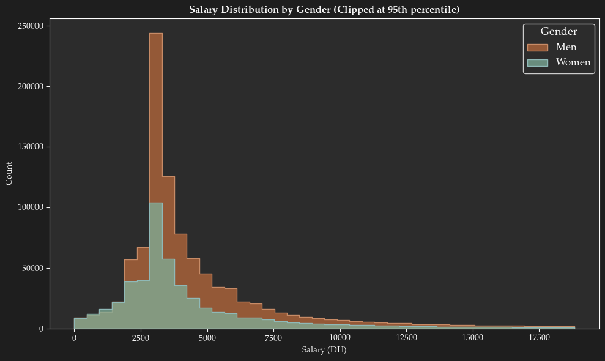
At a given salary, what percentage of people earn less?
# --- Cumulative Distribution Function (CDF) ---
fig, ax = plt.subplots(figsize=(10, 6))
# Men
salaries_male = np.sort(df_plot[df_plot['Gender'] == 'male']['Salary'])
cdf_male = np.arange(1, len(salaries_male) + 1) / len(salaries_male)
ax.plot(
salaries_male,
cdf_male,
color=ACCENT_PRIMARY,
linewidth=2.5,
label='Men'
)
# Women
salaries_female = np.sort(df_plot[df_plot['Gender'] == 'female']['Salary'])
cdf_female = np.arange(1, len(salaries_female) + 1) / len(salaries_female)
ax.plot(
salaries_female,
cdf_female,
color=ACCENT_CONTRAST,
linewidth=2.5,
label='Women'
)
# Labels
ax.set_xlabel(r"Salary ($\mathrm{DH}$)")
ax.set_ylabel(r"Cumulative proportion $P(X \leq x)$")
ax.set_title(
r"\textbf{Cumulative Distribution of Salaries (Clipped at 95th percentile)}"
)
# Legend
ax.legend(
title="Gender",
fontsize=12,
title_fontsize=13,
loc="lower right",
frameon=True
)
# Grid
ax.grid(alpha=0.3)
ax.axvline(np.median(salaries_male), color=ACCENT_PRIMARY, linestyle='--', alpha=0.7)
ax.axvline(np.median(salaries_female), color=ACCENT_CONTRAST, linestyle='--', alpha=0.7)
plt.tight_layout()
plt.show()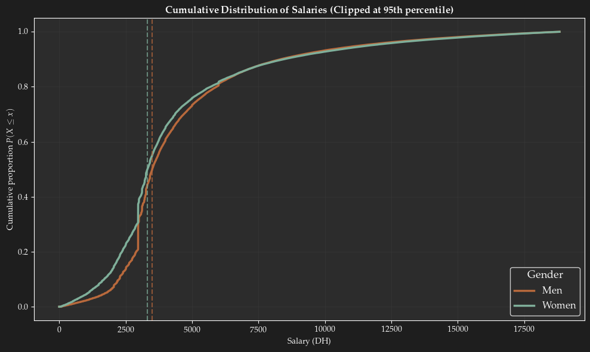
4. Analysis by Salary Brackets
# Define salary brackets
bins = [0, 2500, 3500, 5000, 7500, 10000, 15000, 25000, np.inf]
labels = ['<2500', '2500-3500', '3500-5000', '5000-7500', '7500-10000',
'10000-15000', '15000-25000', '>25000']
df_clean['Salary_bracket'] = pd.cut(df_clean['Salary'], bins=bins, labels=labels)
# Gender distribution per bracket
bracket_gender = pd.crosstab(
df_clean['Salary_bracket'],
df_clean['Gender'],
normalize='index'
) * 100
print("=" * 80)
print("GENDER DISTRIBUTION BY SALARY BRACKET (%)")
print("=" * 80)
print(bracket_gender.round(1))
# Counts per bracket
print(f"\n{'─'*80}")
print("COUNTS BY SALARY BRACKET")
print(f"{'─'*80}")
counts = df_clean['Salary_bracket'].value_counts().sort_index()
for bracket, count in counts.items():
pct = count / len(df_clean) * 100
print(f"{bracket:>15}: {count:>8,} employees ({pct:>5.1f}%)")================================================================================
GENDER DISTRIBUTION BY SALARY BRACKET (%)
================================================================================
Gender female male unknown
Salary_bracket
<2500 45.10 54.60 0.30
2500-3500 30.90 68.80 0.20
3500-5000 30.80 68.90 0.20
5000-7500 28.90 70.80 0.20
7500-10000 31.90 67.80 0.30
10000-15000 34.40 65.30 0.20
15000-25000 35.30 64.40 0.30
>25000 29.80 69.80 0.40
────────────────────────────────────────────────────────────────────────────────
COUNTS BY SALARY BRACKET
────────────────────────────────────────────────────────────────────────────────
<2500: 244,267 employees ( 15.8%)
2500-3500: 518,999 employees ( 33.5%)
3500-5000: 329,641 employees ( 21.3%)
5000-7500: 198,883 employees ( 12.8%)
7500-10000: 79,215 employees ( 5.1%)
10000-15000: 72,833 employees ( 4.7%)
15000-25000: 56,528 employees ( 3.6%)
>25000: 50,048 employees ( 3.2%)Women are overrepresented in lower salary brackets
# --- Filter out 'unknown' genders ---
df_bracket = df_clean[df_clean['Gender'].isin(['male', 'female'])].copy()
# --- Visualization: Distribution by brackets ---
fig, axes = plt.subplots(1, 2, figsize=(16, 6))
# Stacked bar chart
bracket_gender_count = pd.crosstab(df_bracket['Salary_bracket'], df_bracket['Gender'])
# Ensure correct column order
bracket_gender_count = bracket_gender_count[['male', 'female']]
bracket_gender_count.plot(
kind='bar',
stacked=True,
ax=axes[0],
color=[ACCENT_PRIMARY, ACCENT_CONTRAST]
)
axes[0].set_xlabel('Salary Bracket (DH)', fontsize=12)
axes[0].set_ylabel('Number of employees', fontsize=12)
axes[0].set_title('Distribution by Salary Bracket and Gender', fontsize=14, fontweight='bold')
axes[0].legend(
title='Gender',
labels=['Men', 'Women'],
fontsize=12,
title_fontsize=13
)
axes[0].tick_params(axis='x', rotation=45)
axes[0].grid(alpha=0.3, axis='y')
# --- Percentage of women per bracket ---
bracket_gender_pct = bracket_gender_count.div(bracket_gender_count.sum(axis=1), axis=0) * 100
pct_women = bracket_gender_pct['female']
axes[1].bar(
range(len(pct_women)),
pct_women,
color=ACCENT_CONTRAST,
edgecolor=ACCENT_SOFT,
alpha=0.8
)
axes[1].axhline(
y=50,
color=ACCENT_SOFT,
linestyle='--',
linewidth=2,
label='Parity (50\%)'
)
axes[1].set_xlabel('Salary Bracket (DH)', fontsize=12)
axes[1].set_ylabel('% Women', fontsize=12)
axes[1].set_title('Proportion of Women by Salary Bracket', fontsize=14, fontweight='bold')
axes[1].set_xticks(range(len(pct_women)))
axes[1].set_xticklabels(pct_women.index, rotation=45, ha='right')
axes[1].legend(
fontsize=12,
title_fontsize=13,
loc="upper right",
frameon=True
)
axes[1].grid(alpha=0.3, axis='y')
plt.tight_layout()
plt.savefig('../images/salary_tranches_gender.png', dpi=300, bbox_inches='tight')
plt.show()
print("\nGraph saved: salary_tranches_gender.png")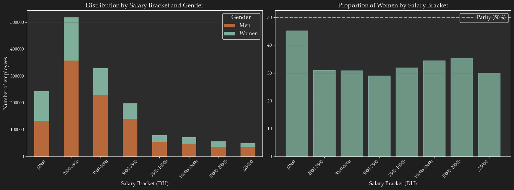
Graph saved: salary_tranches_gender.png5. Geographic Analysis
# Top 20 cities by employee count
top_cities = df_clean['Ville'].value_counts().head(20)
print("=" * 80)
print("TOP 20 CITIES BY EMPLOYEE COUNT")
print("=" * 80)
for i, (city, count) in enumerate(top_cities.items(), 1):
pct = count / len(df_clean) * 100
print(f"{i:2d}. {city:20s}: {count:>8,} employees ({pct:>5.1f}%)")================================================================================
TOP 20 CITIES BY EMPLOYEE COUNT
================================================================================
1. CASABLANCA : 670,439 employees ( 43.2%)
2. TANGER : 143,714 employees ( 9.3%)
3. RABAT : 112,176 employees ( 7.2%)
4. MARRAKECH : 66,253 employees ( 4.3%)
5. KENITRA : 42,085 employees ( 2.7%)
6. FES : 41,701 employees ( 2.7%)
7. AGADIR : 39,948 employees ( 2.6%)
8. TEMARA : 32,055 employees ( 2.1%)
9. SALE : 30,926 employees ( 2.0%)
10. BIOUGRA : 29,665 employees ( 1.9%)
11. MEKNES : 25,986 employees ( 1.7%)
12. MOHAMMEDIA : 23,977 employees ( 1.5%)
13. BERRECHID : 21,852 employees ( 1.4%)
14. SAFI : 18,088 employees ( 1.2%)
15. INEZGANE : 17,918 employees ( 1.2%)
16. EL JADIDA : 15,336 employees ( 1.0%)
17. LAAYOUNE : 14,673 employees ( 0.9%)
18. OUJDA : 13,841 employees ( 0.9%)
19. TAROUDANT : 13,092 employees ( 0.8%)
20. TETOUAN : 12,185 employees ( 0.8%)Map
import matplotlib.pyplot as plt
import geopandas as gpd
# Colors
DARK_GRAY = "#1e1e1e"
ACCENT_PRIMARY = "#b8693c"
# High-resolution Natural Earth (10m)
url = "https://naturalearth.s3.amazonaws.com/10m_cultural/ne_10m_admin_0_countries.zip"
world = gpd.read_file(url)
# Keep Morocco + Western Sahara
morocco_full = world[world["ADMIN"].isin(["Morocco", "Western Sahara"])]
# Merge into single geometry
morocco_full = morocco_full.dissolve()
# Plot
fig, ax = plt.subplots(figsize=(6, 8))
fig.patch.set_facecolor(DARK_GRAY)
ax.set_facecolor(DARK_GRAY)
# Glow
# morocco_full.boundary.plot(ax=ax, color=ACCENT_PRIMARY, linewidth=5, alpha=0.15)
# Main border
# morocco_full.boundary.plot(ax=ax, color=ACCENT_PRIMARY, linewidth=2.2)
morocco_full.plot(
ax=ax,
color=ACCENT_SHADOW, # fill color
alpha=0.5
)
# --- City coordinates (same as before) ---
city_coords = {
"CASABLANCA": (33.5333 ,-7.5833),
"RABAT": (34.0209 ,-6.8416),
"SALE": (34.0333 ,-6.8000),
"BERRECHID": (33.2687 ,-7.5843),
"EL JADIDA": (33.2333 ,-8.5000),
"MOHAMMEDIA": (33.6833 ,-7.3833),
"TANGER": (35.7767 ,-5.8039),
"MARRAKESH": (31.6300 ,-8.0089),
"AGADIR": (30.4333 ,-9.6000),
"FES": (34.0433 ,-5.0033),
"KENITRA": (34.2500 ,-6.5833),
"TEMARA": (33.9267 ,-6.9122),
"INEZGANE": (30.3658 ,-9.5381),
"TETOUAN": (35.5667 ,-5.3667),
"OUJDA": (34.6867 ,-1.9114),
"TAROUDANT": (30.47028 ,-8.87695),
"LAAYOUNE": (27.1536 ,-13.2033),
"MEKNES": (33.8950 ,-5.5547),
"BIOUGRA": (30.2144 ,-9.3708),
"SAFI": (32.2833 ,-9.2333),
"TAOURIRT": (34.4169 ,-2.8850),
"KHENIFRA": (32.9394 ,-5.6675),
"KHOURIBGA": (32.8833 ,-6.9167),
"ERRACHIDIA": (31.9319 ,-4.4244),
}
# Build plotting dataframe
df_cities = top_cities.reset_index()
df_cities.columns = ['City', 'Count']
df_cities[['lat', 'lon']] = df_cities['City'].apply(
lambda x: pd.Series(city_coords.get(x, (None, None)))
)
# Drop missing coords (safety)
df_cities = df_cities.dropna()
# --- Scale bubble sizes (IMPORTANT) ---
df_cities['size'] = np.sqrt(df_cities['Count']) / 15
# --- Plot bubbles ---
ax.scatter(
df_cities['lon'],
df_cities['lat'],
s=df_cities['size'] * 10, # adjust multiplier if needed
color=ACCENT_CONTRAST,
alpha=0.98,
edgecolor=ACCENT_SOFT,
linewidth=0.5
)
ax.set_xlim(-18, 0)
ax.set_ylim(19, 36.5)
ax.set_axis_off()
plt.tight_layout()
plt.savefig("../images/city_employee_count.png", dpi=400, transparent=True)
plt.show()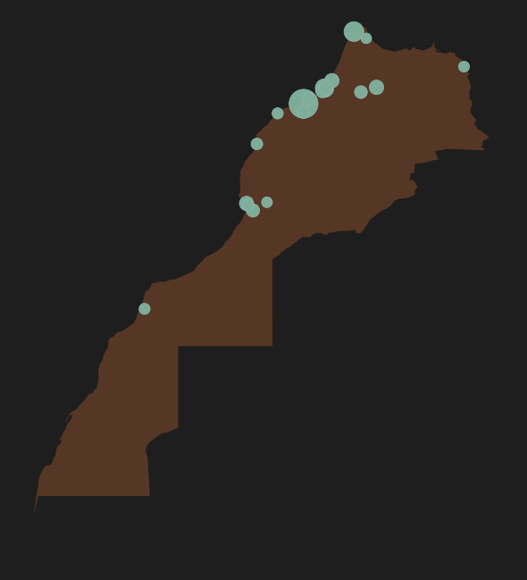
# Salary analysis by city (top 20)
city_stats = df_clean[df_clean['Ville'].isin(top_cities.index)].groupby('Ville').agg({
'Salary': ['mean', 'median', 'std', 'count'],
'Gender': lambda x: (x == 'female').sum() / len(x) * 100
}).round(2)
city_stats.columns = ['Mean_Salary', 'Median_Salary', 'Std', 'Count', 'Pct_Women']
city_stats = city_stats.sort_values('Mean_Salary', ascending=False)
print(f"\n{'─'*80}")
print("SALARY STATISTICS BY CITY (Top 20)")
print(f"{'─'*80}")
print(city_stats)
────────────────────────────────────────────────────────────────────────────────
SALARY STATISTICS BY CITY (Top 20)
────────────────────────────────────────────────────────────────────────────────
Mean_Salary Median_Salary Std Count Pct_Women
Ville
CASABLANCA 8115.69 4131.08 19069.31 670439 31.36
RABAT 6929.01 3560.95 11642.62 112176 42.18
SALE 6496.38 3226.76 11026.12 30926 43.83
BERRECHID 5679.12 3892.00 8286.65 21852 23.21
EL JADIDA 5551.67 3380.50 11810.62 15336 20.28
MOHAMMEDIA 5227.93 3216.44 17158.72 23977 20.87
TANGER 5189.73 3582.90 7365.05 143714 37.37
MARRAKECH 5034.25 3624.28 7010.80 66253 33.16
AGADIR 4788.98 3479.31 9561.85 39948 31.63
FES 4586.42 3300.00 10210.80 41701 42.78
KENITRA 4439.11 3362.20 6513.41 42085 50.84
TEMARA 4439.02 3149.26 6122.50 32055 28.55
INEZGANE 4330.28 3123.75 7701.15 17918 26.67
TETOUAN 4193.21 3267.06 5257.30 12185 47.96
OUJDA 4169.41 3257.26 4530.79 13841 19.13
TAROUDANT 4037.51 3442.01 2621.58 13092 11.11
LAAYOUNE 3898.39 2970.05 4197.46 14673 19.04
MEKNES 3829.33 3080.48 4129.27 25986 29.10
BIOUGRA 3158.36 2706.20 10606.74 29665 29.52
SAFI 3066.67 2863.21 2983.51 18088 47.06# Gender pay gap by city
def calculate_gender_gap(group):
males = group[group['Gender'] == 'male']['Salary']
females = group[group['Gender'] == 'female']['Salary']
if len(males) < 30 or len(females) < 30: # Minimum for reliable stats
return np.nan
gap = (males.mean() - females.mean()) / males.mean() * 100
return gap
city_gap = df_clean[df_clean['Ville'].isin(top_cities.index)].groupby('Ville').apply(calculate_gender_gap)
city_gap = city_gap.dropna().sort_values(ascending=False)
print(f"\n{'─'*80}")
print("GENDER PAY GAP BY CITY (\%)")
print(f"{'─'*80}")
for city, gap in city_gap.items():
print(f"{city:20s}: {gap:>6.2f}%")
────────────────────────────────────────────────────────────────────────────────
GENDER PAY GAP BY CITY (\%)
────────────────────────────────────────────────────────────────────────────────
SAFI : 41.84%
TETOUAN : 31.25%
KENITRA : 30.68%
INEZGANE : 29.38%
AGADIR : 26.13%
TANGER : 25.06%
BIOUGRA : 19.86%
LAAYOUNE : 17.93%
TAROUDANT : 15.49%
RABAT : 12.60%
FES : 12.59%
SALE : 11.21%
OUJDA : 9.87%
TEMARA : 6.96%
BERRECHID : 6.86%
EL JADIDA : 6.54%
MEKNES : 6.03%
MARRAKECH : 3.96%
CASABLANCA : 1.97%
MOHAMMEDIA : -5.47%# Geographic visualization
fig, axes = plt.subplots(2, 2, figsize=(18, 12))
# Top cities by employee count
top_cities.plot(kind='barh', ax=axes[0, 0], color=ACCENT_PRIMARY, edgecolor='white')
axes[0, 0].set_xlabel('Number of employees', fontsize=12)
axes[0, 0].set_ylabel('City', fontsize=12)
axes[0, 0].set_title('Top 20 Cities by Employee Count', fontsize=14, fontweight='bold')
axes[0, 0].grid(alpha=0.3, axis='x')
# Mean salary by city
city_stats['Mean_Salary'].plot(kind='barh', ax=axes[0, 1], color=ACCENT_SECONDARY, edgecolor='white')
axes[0, 1].set_xlabel('Mean Salary (DH)', fontsize=12)
axes[0, 1].set_ylabel('City', fontsize=12)
axes[0, 1].set_title('Mean Salary by City (Top 20)', fontsize=14, fontweight='bold')
axes[0, 1].grid(alpha=0.3, axis='x')
# % women by city
city_stats['Pct_Women'].sort_values().plot(kind='barh', ax=axes[1, 0], color=ACCENT_LIGHT, edgecolor='white')
axes[1, 0].axvline(x=50, color='white', linestyle='--', linewidth=2, label='Parity')
axes[1, 0].set_xlabel('% Women', fontsize=12)
axes[1, 0].set_ylabel('City', fontsize=12)
axes[1, 0].set_title('Proportion of Women by City', fontsize=14, fontweight='bold')
axes[1, 0].legend()
axes[1, 0].grid(alpha=0.3, axis='x')
# Gender pay gap by city
city_gap.plot(kind='barh', ax=axes[1, 1], color=ACCENT_DARK, edgecolor='white')
axes[1, 1].axvline(x=0, color=ACCENT_LIGHT, linestyle='--', linewidth=2, label='Equality')
axes[1, 1].set_xlabel('Gender Pay Gap (\%)', fontsize=12)
axes[1, 1].set_ylabel('City', fontsize=12)
axes[1, 1].set_title('Gender Pay Gap by City', fontsize=14, fontweight='bold')
axes[1, 1].legend()
axes[1, 1].grid(alpha=0.3, axis='x')
plt.tight_layout()
plt.savefig('../images/geographic_analysis.png', dpi=300, bbox_inches='tight', transparent=True)
plt.show()
print("\nGraph saved: ../images/geographic_analysis.png")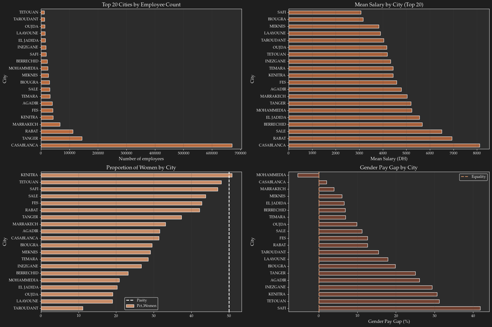
Graph saved: ../images/geographic_analysis.png6. Sectoral Analysis (by Activity)
# Top 30 sectors
top_sectors = df_clean['Activité'].value_counts().head(30)
print("=" * 80)
print("TOP 30 ACTIVITY SECTORS")
print("=" * 80)
for i, (sector, count) in enumerate(top_sectors.items(), 1):
pct = count / len(df_clean) * 100
print(f"{i:2d}. {sector[:50]:50s}: {count:>8,} ({pct:>5.1f}%)")================================================================================
TOP 30 ACTIVITY SECTORS
================================================================================
1. TRAVAIL TEMPORAIRE : 39,923 ( 2.6%)
2. CONFECTION : 29,708 ( 1.9%)
3. BANQUE : 24,632 ( 1.6%)
4. AGR CULTEUR DE TOMATES : 19,782 ( 1.3%)
5. FCA DES PIECES ET COMPOSSANTS AUTOMOBILE : 18,883 ( 1.2%)
6. PROMOTION DE L'ENSEIGNEMENT PRESCOLAIRE : 18,639 ( 1.2%)
7. ENTREPRENEUR DE TRAVAUX DIVERS : 13,221 ( 0.9%)
8. TRAVAUX GENEREAUX DE CONSTRUCTION : 12,514 ( 0.8%)
9. ENT SURVEILLANCE PROTECTION VOL : 10,547 ( 0.7%)
10. ENTREPRISE T P : 10,401 ( 0.7%)
11. BUREAU D'ETUDE PRESTATION DE SERVICE : 9,608 ( 0.6%)
12. PRESTATION DE SERVICE : 9,288 ( 0.6%)
13. NEGOCIANT : 8,381 ( 0.5%)
14. OPERATION FACILITANT FONCTIONNMENT BANQU : 8,251 ( 0.5%)
15. FABRICATION DE CABLAGES AUTOS : 7,822 ( 0.5%)
16. IMPORT EXPORT : 7,622 ( 0.5%)
17. CENTRE D APPELS : 7,454 ( 0.5%)
18. GARDIENNAGE ET SECURITE : 7,149 ( 0.5%)
19. INGENIEUR CONSEIL : 6,806 ( 0.4%)
20. AGRICULTURE : 6,618 ( 0.4%)
21. EXPL UNE USINE POUR LA FABRIC DE CABLES : 6,564 ( 0.4%)
22. EXPLOITATION AGRICOLE : 6,504 ( 0.4%)
23. ENTREPRENEUR DE GARDIENNAGE : 6,306 ( 0.4%)
24. FABRICATION DE CABLES METALLIQUES : 6,225 ( 0.4%)
25. FAB ET LA VENTE DE TOUS VEHICULES AUTOMO : 6,135 ( 0.4%)
26. GARDIENNAGE : 6,127 ( 0.4%)
27. FABRICATION DE PIECES AUTOMOBILES : 6,014 ( 0.4%)
28. SUPPOPT ET HELPING MULTILANGUE TELECOMMU : 5,921 ( 0.4%)
29. ENTREPRENEUR FOURNITURE DE MAINS D'OEUVR : 5,916 ( 0.4%)
30. PRODUCTION ANIMALE : 5,821 ( 0.4%)# Salary analysis by sector
sector_stats = df_clean[df_clean['Activité'].isin(top_sectors.index)].groupby('Activité').agg({
'Salary': ['mean', 'median', 'std', 'count'],
'Gender': lambda x: (x == 'female').sum() / len(x) * 100
}).round(2)
sector_stats.columns = ['Mean_Salary', 'Median_Salary', 'Std', 'Count', 'Pct_Women']
sector_stats = sector_stats.sort_values('Mean_Salary', ascending=False)
print(f"\n{'─'*80}")
print("SALARY STATISTICS BY SECTOR (Top 30)")
print(f"{'─'*80}")
print(sector_stats.head(20))
────────────────────────────────────────────────────────────────────────────────
SALARY STATISTICS BY SECTOR (Top 30)
────────────────────────────────────────────────────────────────────────────────
Mean_Salary Median_Salary Std \
Activité
BANQUE 18140.76 13528.60 18741.59
INGENIEUR CONSEIL 17448.30 11607.65 24397.12
OPERATION FACILITANT FONCTIONNMENT BANQU 14712.66 11059.92 17826.79
FAB ET LA VENTE DE TOUS VEHICULES AUTOMO 9395.60 6900.19 7967.62
SUPPOPT ET HELPING MULTILANGUE TELECOMMU 7777.85 6689.17 5681.27
CENTRE D APPELS 6954.64 5613.50 5984.67
IMPORT EXPORT 6534.02 3840.22 10268.91
FABRICATION DE CABLAGES AUTOS 6054.33 4570.57 8958.03
NEGOCIANT 5204.07 3275.72 13092.48
ENTREPRISE T P 5043.91 3574.93 8596.75
FABRICATION DE CABLES METALLIQUES 4882.11 3885.29 4959.11
FCA DES PIECES ET COMPOSSANTS AUTOMOBILE 4549.44 3396.76 6603.35
PRODUCTION ANIMALE 4385.37 3592.05 2208.59
TRAVAUX GENEREAUX DE CONSTRUCTION 4336.55 3638.70 6049.01
FABRICATION DE PIECES AUTOMOBILES 4109.84 3404.85 5136.76
EXPL UNE USINE POUR LA FABRIC DE CABLES 3754.23 3377.71 3542.60
TRAVAIL TEMPORAIRE 3566.03 3234.40 2916.59
ENT SURVEILLANCE PROTECTION VOL 3496.02 3312.96 2443.84
CONFECTION 3479.94 3198.51 2395.06
ENTREPRENEUR DE TRAVAUX DIVERS 3474.88 3000.00 3034.44
Count Pct_Women
Activité
BANQUE 24632 44.17
INGENIEUR CONSEIL 6806 33.07
OPERATION FACILITANT FONCTIONNMENT BANQU 8251 54.90
FAB ET LA VENTE DE TOUS VEHICULES AUTOMO 6135 9.47
SUPPOPT ET HELPING MULTILANGUE TELECOMMU 5921 53.18
CENTRE D APPELS 7454 51.05
IMPORT EXPORT 7622 29.38
FABRICATION DE CABLAGES AUTOS 7822 58.23
NEGOCIANT 8381 41.58
ENTREPRISE T P 10401 2.21
FABRICATION DE CABLES METALLIQUES 6225 75.10
FCA DES PIECES ET COMPOSSANTS AUTOMOBILE 18883 38.83
PRODUCTION ANIMALE 5821 9.86
TRAVAUX GENEREAUX DE CONSTRUCTION 12514 1.71
FABRICATION DE PIECES AUTOMOBILES 6014 87.38
EXPL UNE USINE POUR LA FABRIC DE CABLES 6564 70.80
TRAVAIL TEMPORAIRE 39923 25.30
ENT SURVEILLANCE PROTECTION VOL 10547 3.24
CONFECTION 29708 67.22
ENTREPRENEUR DE TRAVAUX DIVERS 13221 13.47 # Best and worst paid sectors
print(f"\n{'='*80}")
print("TOP 10 BEST PAID SECTORS")
print(f"{'='*80}")
best_paid = sector_stats.nlargest(10, 'Mean_Salary')[['Mean_Salary', 'Count', 'Pct_Women']]
print(best_paid)
print(f"\n{'='*80}")
print("TOP 10 WORST PAID SECTORS")
print(f"{'='*80}")
worst_paid = sector_stats.nsmallest(10, 'Mean_Salary')[['Mean_Salary', 'Count', 'Pct_Women']]
print(worst_paid)
================================================================================
TOP 10 BEST PAID SECTORS
================================================================================
Mean_Salary Count Pct_Women
Activité
BANQUE 18140.76 24632 44.17
INGENIEUR CONSEIL 17448.30 6806 33.07
OPERATION FACILITANT FONCTIONNMENT BANQU 14712.66 8251 54.90
FAB ET LA VENTE DE TOUS VEHICULES AUTOMO 9395.60 6135 9.47
SUPPOPT ET HELPING MULTILANGUE TELECOMMU 7777.85 5921 53.18
CENTRE D APPELS 6954.64 7454 51.05
IMPORT EXPORT 6534.02 7622 29.38
FABRICATION DE CABLAGES AUTOS 6054.33 7822 58.23
NEGOCIANT 5204.07 8381 41.58
ENTREPRISE T P 5043.91 10401 2.21
================================================================================
TOP 10 WORST PAID SECTORS
================================================================================
Mean_Salary Count Pct_Women
Activité
ENTREPRENEUR FOURNITURE DE MAINS D'OEUVR 2400.59 5916 60.94
EXPLOITATION AGRICOLE 2713.12 6504 28.46
GARDIENNAGE ET SECURITE 2779.35 7149 1.87
ENTREPRENEUR DE GARDIENNAGE 2904.97 6306 2.36
GARDIENNAGE 2939.37 6127 3.20
AGR CULTEUR DE TOMATES 3014.32 19782 24.33
AGRICULTURE 3093.56 6618 19.37
PROMOTION DE L'ENSEIGNEMENT PRESCOLAIRE 3108.35 18639 80.73
PRESTATION DE SERVICE 3244.55 9288 30.60
BUREAU D'ETUDE PRESTATION DE SERVICE 3295.00 9608 27.71# Sectors with extreme feminization
print(f"\n{'='*80}")
print("SECTORS WITH HIGH FEMINIZATION (>60% women)")
print(f"{'='*80}")
sectors_fem = sector_stats[sector_stats['Pct_Women'] > 60].sort_values('Pct_Women', ascending=False)
if len(sectors_fem) > 0:
print(sectors_fem[['Pct_Women', 'Mean_Salary', 'Count']])
else:
print("No sector with >60% women")
print(f"\n{'='*80}")
print("SECTORS WITH LOW FEMINIZATION (<20% women)")
print(f"{'='*80}")
sectors_masc = sector_stats[sector_stats['Pct_Women'] < 20].sort_values('Pct_Women')
if len(sectors_masc) > 0:
print(sectors_masc[['Pct_Women', 'Mean_Salary', 'Count']])
else:
print("No sector with <20% women")
================================================================================
SECTORS WITH HIGH FEMINIZATION (>60% women)
================================================================================
Pct_Women Mean_Salary Count
Activité
FABRICATION DE PIECES AUTOMOBILES 87.38 4109.84 6014
PROMOTION DE L'ENSEIGNEMENT PRESCOLAIRE 80.73 3108.35 18639
FABRICATION DE CABLES METALLIQUES 75.10 4882.11 6225
EXPL UNE USINE POUR LA FABRIC DE CABLES 70.80 3754.23 6564
CONFECTION 67.22 3479.94 29708
ENTREPRENEUR FOURNITURE DE MAINS D'OEUVR 60.94 2400.59 5916
================================================================================
SECTORS WITH LOW FEMINIZATION (<20% women)
================================================================================
Pct_Women Mean_Salary Count
Activité
TRAVAUX GENEREAUX DE CONSTRUCTION 1.71 4336.55 12514
GARDIENNAGE ET SECURITE 1.87 2779.35 7149
ENTREPRISE T P 2.21 5043.91 10401
ENTREPRENEUR DE GARDIENNAGE 2.36 2904.97 6306
GARDIENNAGE 3.20 2939.37 6127
ENT SURVEILLANCE PROTECTION VOL 3.24 3496.02 10547
FAB ET LA VENTE DE TOUS VEHICULES AUTOMO 9.47 9395.60 6135
PRODUCTION ANIMALE 9.86 4385.37 5821
ENTREPRENEUR DE TRAVAUX DIVERS 13.47 3474.88 13221
AGRICULTURE 19.37 3093.56 6618# Gender pay gap by sector
sector_gap = df_clean[df_clean['Activité'].isin(top_sectors.index)].groupby('Activité').apply(calculate_gender_gap)
sector_gap = sector_gap.dropna().sort_values(ascending=False)
print(f"\n{'─'*80}")
print("GENDER PAY GAP BY SECTOR (Top 15 gaps)")
print(f"{'─'*80}")
for sector, gap in sector_gap.head(15).items():
print(f"{sector[:60]:60s}: {gap:>6.2f}%")
────────────────────────────────────────────────────────────────────────────────
GENDER PAY GAP BY SECTOR (Top 15 gaps)
────────────────────────────────────────────────────────────────────────────────
ENTREPRENEUR FOURNITURE DE MAINS D'OEUVR : 58.44%
FABRICATION DE PIECES AUTOMOBILES : 50.51%
AGRICULTURE : 35.88%
FABRICATION DE CABLES METALLIQUES : 35.23%
EXPL UNE USINE POUR LA FABRIC DE CABLES : 32.50%
FABRICATION DE CABLAGES AUTOS : 31.52%
OPERATION FACILITANT FONCTIONNMENT BANQU : 31.05%
EXPLOITATION AGRICOLE : 29.44%
INGENIEUR CONSEIL : 23.91%
FCA DES PIECES ET COMPOSSANTS AUTOMOBILE : 21.99%
AGR CULTEUR DE TOMATES : 21.29%
PRODUCTION ANIMALE : 19.12%
TRAVAIL TEMPORAIRE : 15.82%
NEGOCIANT : 14.60%
BANQUE : 12.63%# Sectoral visualization
fig, axes = plt.subplots(2, 2, figsize=(18, 12))
# Top sectors by mean salary
sector_stats.nlargest(15, 'Mean_Salary')['Mean_Salary'].plot(
kind='barh', ax=axes[0, 0], color=ACCENT_PRIMARY, edgecolor='white'
)
axes[0, 0].set_xlabel('Mean Salary (DH)', fontsize=12)
axes[0, 0].set_ylabel('Activity Sector', fontsize=11)
axes[0, 0].set_title('Top 15 Best Paid Sectors', fontsize=14, fontweight='bold')
axes[0, 0].tick_params(axis='y', labelsize=9)
axes[0, 0].grid(alpha=0.3, axis='x')
# Correlation mean salary vs % women
axes[0, 1].scatter(sector_stats['Pct_Women'], sector_stats['Mean_Salary'],
s=sector_stats['Count']/10, alpha=0.6, c=sector_stats['Mean_Salary'],
cmap='Oranges', edgecolors='white', linewidth=0.5)
axes[0, 1].set_xlabel('% Women', fontsize=12)
axes[0, 1].set_ylabel('Mean Salary (DH)', fontsize=12)
axes[0, 1].set_title('Mean Salary vs Sector Feminization', fontsize=14, fontweight='bold')
axes[0, 1].grid(alpha=0.3)
# Correlation calculation
corr, pval = stats.pearsonr(sector_stats['Pct_Women'], sector_stats['Mean_Salary'])
axes[0, 1].text(0.05, 0.95, f'r = {corr:.3f}\np = {pval:.2e}',
transform=axes[0, 1].transAxes, fontsize=11,
verticalalignment='top', bbox=dict(boxstyle='round', facecolor=DARK_GRAY_LC, alpha=0.8))
# Heatmap: count by sector and gender (top 20 sectors)
top20_sectors = top_sectors.head(20).index
heatmap_data = pd.crosstab(
df_clean[df_clean['Activité'].isin(top20_sectors)]['Activité'],
df_clean[df_clean['Activité'].isin(top20_sectors)]['Gender']
)
sns.heatmap(heatmap_data, annot=True, fmt='d', cmap='Oranges', ax=axes[1, 0],
cbar_kws={'label': 'Number of employees'})
axes[1, 0].set_xlabel('Gender', fontsize=12)
axes[1, 0].set_ylabel('Activity Sector', fontsize=11)
axes[1, 0].set_title('Employee Count by Sector and Gender (Top 20)', fontsize=14, fontweight='bold')
axes[1, 0].tick_params(axis='y', labelsize=8)
# Gender pay gap by sector (top 15)
sector_gap.head(15).plot(kind='barh', ax=axes[1, 1], color=ACCENT_DARK, edgecolor='white')
axes[1, 1].axvline(x=0, color=ACCENT_LIGHT, linestyle='--', linewidth=2, label='Equality')
axes[1, 1].set_xlabel('Gender Pay Gap (\%)', fontsize=12)
axes[1, 1].set_ylabel('Activity Sector', fontsize=11)
axes[1, 1].set_title('Gender Pay Gap by Sector (Top 15)', fontsize=14, fontweight='bold')
axes[1, 1].tick_params(axis='y', labelsize=9)
axes[1, 1].legend()
axes[1, 1].grid(alpha=0.3, axis='x')
plt.tight_layout()
plt.savefig('../images/sectoral_analysis.png', dpi=300, bbox_inches='tight')
plt.show()
print("\nGraph saved: sectoral_analysis.png")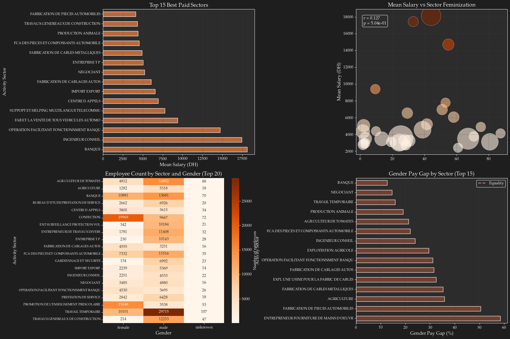
Graph saved: sectoral_analysis.png7. Company Analysis
# Top 20 employers
top_companies = df_clean['Raison Sociale'].value_counts().head(20)
print("=" * 80)
print("TOP 20 LARGEST EMPLOYERS")
print("=" * 80)
for i, (company, count) in enumerate(top_companies.items(), 1):
pct = count / len(df_clean) * 100
print(f"{i:2d}. {company[:50]:50s}: {count:>6,} employees ({pct:>5.2f}%)")================================================================================
TOP 20 LARGEST EMPLOYERS
================================================================================
1. TECTRA : 32,583 employees ( 2.10%)
2. SA STE MARAISSA : 19,782 employees ( 1.28%)
3. LEAR AUTOMOTIVE MOROCCO : 18,883 employees ( 1.22%)
4. FONDA MAROC PR PROMOTN ENSEIGNMT PRESCOL : 18,639 employees ( 1.20%)
5. T G C C SA : 12,514 employees ( 0.81%)
6. MAROCAINE DE TRAVAIL TEMPORAIRE (STE) : 11,231 employees ( 0.72%)
7. G4S MAROC : 10,547 employees ( 0.68%)
8. STE SGTM : 10,337 employees ( 0.67%)
9. BEST PROFIL : 8,768 employees ( 0.57%)
10. BANQUE CENTRALE POPULAIRE : 8,251 employees ( 0.53%)
11. ATTIJARIWAFA BANK : 8,016 employees ( 0.52%)
12. YAZAKI MOROCCO : 7,822 employees ( 0.50%)
13. AINSI MAROC G.S : 7,121 employees ( 0.46%)
14. FUJIKURA AUTOMOTIVE MOROCCO KENITRA : 6,564 employees ( 0.42%)
15. SEWS - CABIND MAROC : 6,225 employees ( 0.40%)
16. RENAULT TANGER EXPLOITATION : 6,135 employees ( 0.40%)
17. SEWS MAROC : 6,014 employees ( 0.39%)
18. STE INTELCIA MAROC SA : 5,921 employees ( 0.38%)
19. AINSI MAROC NETOYAGE INDUSTREIL INTERIM : 5,916 employees ( 0.38%)
20. COOPERATIVE AGRICOLE COPAG : 5,821 employees ( 0.38%)# Employment concentration (Herfindahl-Hirschman-like Index)
company_shares = df_clean['Raison Sociale'].value_counts(normalize=True)
hhi = (company_shares ** 2).sum() * 10000
print(f"\n{'='*80}")
print(f"HERFINDAHL HIRSCHMAN-LIKE INDEX (HHI): {hhi:.2f}")
print(f"{'='*80}")
print("Interpretation:")
if hhi < 100:
print(" → Highly fragmented market (labor wise)")
elif hhi < 1500:
print(" → Unconcentrated market (labor wise)")
elif hhi < 2500:
print(" → Moderately concentrated market (labor wise)")
else:
print(" → Highly concentrated market (labor oligopoly/monopoly)")
# Share of top employers
top5_share = company_shares.head(5).sum() * 100
top10_share = company_shares.head(10).sum() * 100
top20_share = company_shares.head(20).sum() * 100
print(f"\nEmployment share:")
print(f" • Top 5 companies: {top5_share:.2f}%")
print(f" • Top 10 companies: {top10_share:.2f}%")
print(f" • Top 20 companies: {top20_share:.2f}%")
================================================================================
HERFINDAHL HIRSCHMAN-LIKE INDEX (HHI): 18.34
================================================================================
Interpretation:
→ Highly fragmented market (labor wise)
Employment share:
• Top 5 companies: 6.60%
• Top 10 companies: 9.77%
• Top 20 companies: 14.00%# Salary analysis by company (top 20)
company_stats = df_clean[df_clean['Raison Sociale'].isin(top_companies.index)].groupby('Raison Sociale').agg({
'Salary': ['mean', 'median', 'std'],
'Gender': lambda x: (x == 'female').sum() / len(x) * 100,
'N° d\'immatriculation': 'count'
}).round(2)
company_stats.columns = ['Mean_Salary', 'Median_Salary', 'Std', 'Pct_Women', 'Count']
company_stats = company_stats.sort_values('Count', ascending=False)
print(f"\n{'─'*80}")
print("COMPANY STATISTICS (Top 20 employers)")
print(f"{'─'*80}")
print(company_stats)
────────────────────────────────────────────────────────────────────────────────
COMPANY STATISTICS (Top 20 employers)
────────────────────────────────────────────────────────────────────────────────
Mean_Salary Median_Salary Std \
Raison Sociale
TECTRA 3470.62 3208.80 2751.93
SA STE MARAISSA 3014.32 2815.40 11528.86
LEAR AUTOMOTIVE MOROCCO 4549.44 3396.76 6603.35
FONDA MAROC PR PROMOTN ENSEIGNMT PRESCOL 3108.35 2970.05 975.95
T G C C SA 4336.55 3638.70 6049.01
MAROCAINE DE TRAVAIL TEMPORAIRE (STE) 3188.00 3067.09 2538.77
G4S MAROC 3496.02 3312.96 2443.84
STE SGTM 5051.96 3574.93 8621.53
BEST PROFIL 3239.29 3026.37 2285.30
BANQUE CENTRALE POPULAIRE 14712.66 11059.92 17826.79
ATTIJARIWAFA BANK 16414.31 12075.49 19287.96
YAZAKI MOROCCO 6054.33 4570.57 8958.03
AINSI MAROC G.S 2779.24 2970.03 497.26
FUJIKURA AUTOMOTIVE MOROCCO KENITRA 3754.23 3377.71 3542.60
SEWS - CABIND MAROC 4882.11 3885.29 4959.11
RENAULT TANGER EXPLOITATION 9395.60 6900.19 7967.62
SEWS MAROC 4109.84 3404.85 5136.76
STE INTELCIA MAROC SA 7777.85 6689.17 5681.27
AINSI MAROC NETOYAGE INDUSTREIL INTERIM 2400.59 2223.65 1651.86
COOPERATIVE AGRICOLE COPAG 4385.37 3592.05 2208.59
Pct_Women Count
Raison Sociale
TECTRA 26.86 32583
SA STE MARAISSA 24.33 19782
LEAR AUTOMOTIVE MOROCCO 38.83 18883
FONDA MAROC PR PROMOTN ENSEIGNMT PRESCOL 80.73 18639
T G C C SA 1.71 12514
MAROCAINE DE TRAVAIL TEMPORAIRE (STE) 30.83 11231
G4S MAROC 3.24 10547
STE SGTM 2.18 10337
BEST PROFIL 30.52 8768
BANQUE CENTRALE POPULAIRE 54.90 8251
ATTIJARIWAFA BANK 41.63 8016
YAZAKI MOROCCO 58.23 7822
AINSI MAROC G.S 1.57 7121
FUJIKURA AUTOMOTIVE MOROCCO KENITRA 70.80 6564
SEWS - CABIND MAROC 75.10 6225
RENAULT TANGER EXPLOITATION 9.47 6135
SEWS MAROC 87.38 6014
STE INTELCIA MAROC SA 53.18 5921
AINSI MAROC NETOYAGE INDUSTREIL INTERIM 60.94 5916
COOPERATIVE AGRICOLE COPAG 9.86 5821 8. Advanced Analyses
# Analysis by deciles
df_clean['Decile'] = pd.qcut(df_clean['Salary'], q=10, labels=range(1, 11))
decile_stats = df_clean.groupby('Decile').agg({
'Salary': ['min', 'max', 'mean', 'count'],
'Gender': lambda x: (x == 'female').sum() / len(x) * 100
}).round(2)
decile_stats.columns = ['Min_Salary', 'Max_Salary', 'Mean_Salary', 'Count', 'Pct_Women']
print("=" * 80)
print("ANALYSIS BY SALARY DECILE")
print("=" * 80)
print(decile_stats)
# Share of total salary mass by decile
total_salary = df_clean['Salary'].sum()
decile_salary = df_clean.groupby('Decile')['Salary'].sum()
decile_share = (decile_salary / total_salary * 100).round(2)
print(f"\n{'─'*80}")
print("SHARE OF TOTAL SALARY MASS BY DECILE (%)")
print(f"{'─'*80}")
for decile, share in decile_share.items():
print(f"Decile {decile}: {share:>6.2f}%")
# Inter-decile ratio (D9/D1)
d9 = df_clean[df_clean['Decile'] == 9]['Salary'].mean()
d1 = df_clean[df_clean['Decile'] == 1]['Salary'].mean()
ratio_d9_d1 = d9 / d1
print(f"\n{'='*80}")
print(f"INTER-DECILE RATIO (D9/D1): {ratio_d9_d1:.2f}")
print(f"{'='*80}")
print(f"The top 10% earn {ratio_d9_d1:.1f}x more than the bottom 10%")================================================================================
ANALYSIS BY SALARY DECILE
================================================================================
Min_Salary Max_Salary Mean_Salary Count Pct_Women
Decile
1 0.01 2099.25 1355.18 155178 48.37
2 2099.26 2771.79 2444.03 154906 37.98
3 2771.80 2971.00 2942.82 165122 29.30
4 2971.01 3234.40 3100.95 148166 30.91
5 3234.41 3538.39 3369.85 151836 30.63
6 3538.40 4054.66 3781.32 155045 31.96
7 4054.67 4967.08 4467.50 155038 29.86
8 4967.09 6600.00 5697.21 155354 27.86
9 6600.01 11220.76 8401.30 154727 32.15
10 11220.82 7399227.20 27257.31 155042 33.32
────────────────────────────────────────────────────────────────────────────────
SHARE OF TOTAL SALARY MASS BY DECILE (%)
────────────────────────────────────────────────────────────────────────────────
Decile 1: 2.16%
Decile 2: 3.89%
Decile 3: 4.99%
Decile 4: 4.72%
Decile 5: 5.26%
Decile 6: 6.02%
Decile 7: 7.11%
Decile 8: 9.09%
Decile 9: 13.35%
Decile 10: 43.41%
================================================================================
INTER-DECILE RATIO (D9/D1): 6.20
================================================================================
The top 10% earn 6.2x more than the bottom 10%# Lorenz curve and Gini coefficient
fig, axes = plt.subplots(1, 2, figsize=(16, 6))
# Lorenz curve
sorted_salaries = np.sort(df_clean['Salary'].values)
cum_salaries = np.cumsum(sorted_salaries)
cum_salaries_norm = cum_salaries / cum_salaries[-1]
cum_pop = np.arange(1, len(sorted_salaries)+1) / len(sorted_salaries)
axes[0].plot(cum_pop, cum_salaries_norm, linewidth=2, label='Lorenz curve', color=ACCENT_PRIMARY)
axes[0].plot([0, 1], [0, 1], 'r--', linewidth=2, label='Perfect equality')
axes[0].fill_between(cum_pop, cum_salaries_norm, cum_pop, alpha=0.3, color=ACCENT_SECONDARY)
axes[0].set_xlabel('Cumulative Proportion of Population', fontsize=12)
axes[0].set_ylabel('Cumulative Proportion of Salaries', fontsize=12)
axes[0].set_title(f'Lorenz Curve (Gini = {gini:.4f})', fontsize=14, fontweight='bold')
axes[0].legend(fontsize=11)
axes[0].grid(alpha=0.3)
# Share of salary mass by decile
axes[1].bar(range(1, 11), decile_share, color=ACCENT_PRIMARY, edgecolor='white', alpha=0.7)
axes[1].axhline(y=10, color=ACCENT_LIGHT, linestyle='--', linewidth=2, label='Equality (10\% per decile)')
axes[1].set_xlabel('Decile', fontsize=12)
axes[1].set_ylabel('Share of Salary Mass (\%)', fontsize=12)
axes[1].set_title('Distribution of Salary Mass by Decile', fontsize=14, fontweight='bold')
axes[1].set_xticks(range(1, 11))
axes[1].legend()
axes[1].grid(alpha=0.3, axis='y')
plt.tight_layout()
plt.savefig('../images/inequality_analysis.png', dpi=300, bbox_inches='tight')
plt.show()
print("\nGraph saved: inequality_analysis.png")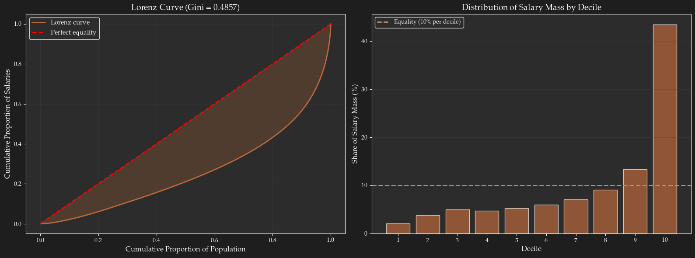
Graph saved: inequality_analysis.png# Analysis of female representation by decile
fig, ax = plt.subplots(figsize=(12, 6))
x = np.arange(1, 11)
width = 0.7
bars = ax.bar(x, decile_stats['Pct_Women'], width, color=ACCENT_SECONDARY, edgecolor='white', alpha=0.7)
ax.axhline(y=50, color=ACCENT_LIGHT, linestyle='--', linewidth=2, label='Parity (50\%)')
ax.axhline(y=decile_stats['Pct_Women'].mean(), color='white', linestyle='--', linewidth=2,
label=f'Average ({decile_stats["Pct_Women"].mean():.1f}\%)')
ax.set_xlabel('Salary Decile', fontsize=12)
ax.set_ylabel('% Women', fontsize=12)
ax.set_title('Female Representation by Salary Decile', fontsize=14, fontweight='bold')
ax.set_xticks(x)
ax.set_xticklabels([f'D{i}' for i in range(1, 11)])
ax.legend(fontsize=11)
ax.grid(alpha=0.3, axis='y')
# Annotations on bars
for i, bar in enumerate(bars):
height = bar.get_height()
ax.text(bar.get_x() + bar.get_width()/2., height,
f'{height:.1f}%',
ha='center', va='bottom', fontsize=9, color=TEXT_PRIMARY)
plt.tight_layout()
plt.savefig('../images/gender_by_decile.png', dpi=300, bbox_inches='tight')
plt.show()
print("\nGraph saved: gender_by_decile.png")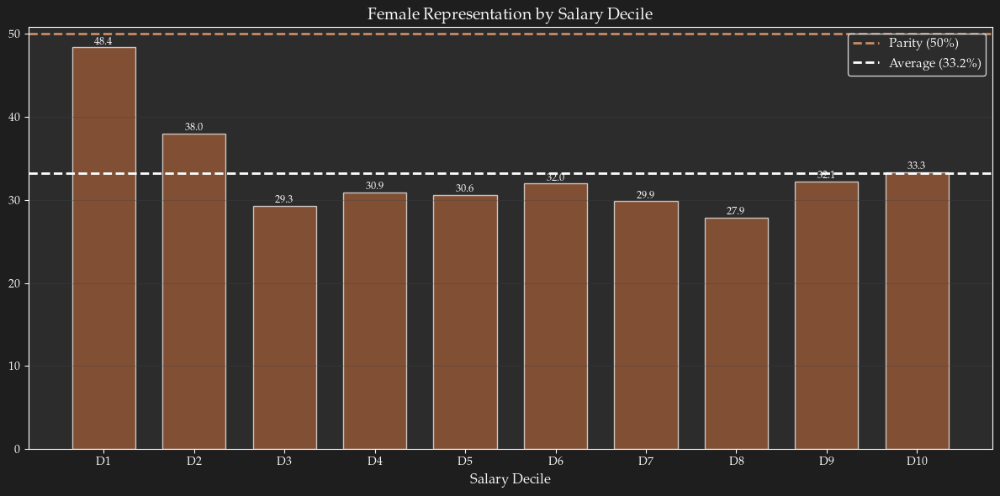
Graph saved: gender_by_decile.png9. Multivariate Analysis: Gender × Sector × City
# Intersectionality: Gender × City (top 10)
gender_city_stats = df_clean[df_clean['Ville'].isin(top10_cities)].groupby(['Ville', 'Gender']).agg({
'Salary': ['mean', 'count']
}).round(2)
gender_city_stats.columns = ['Mean_Salary', 'Count']
gender_city_pivot = gender_city_stats.reset_index().pivot(index='Ville', columns='Gender', values='Mean_Salary')
gender_city_pivot['Gap_%'] = ((gender_city_pivot['male'] - gender_city_pivot['female']) /
gender_city_pivot['male'] * 100).round(2)
print(f"\n{'─'*80}")
print("MEAN SALARY BY GENDER AND CITY (Top 10 cities)")
print(f"{'─'*80}")
print(gender_city_pivot.sort_values('Gap_%', ascending=False))--------------------------------------------------------------------------- NameError Traceback (most recent call last) Cell In[30], line 2 1 # Intersectionality: Gender × City (top 10) ----> 2 gender_city_stats = df_clean[df_clean['Ville'].isin(top10_cities)].groupby(['Ville', 'Gender']).agg({ 3 'Salary': ['mean', 'count'] 4 }).round(2) 6 gender_city_stats.columns = ['Mean_Salary', 'Count'] 7 gender_city_pivot = gender_city_stats.reset_index().pivot(index='Ville', columns='Gender', values='Mean_Salary') NameError: name 'top10_cities' is not defined
# Heatmap: Gender pay gap by city and sector
def calc_gap_for_group(group):
males = group[group['Gender'] == 'male']['Salary']
females = group[group['Gender'] == 'female']['Salary']
if len(males) >= 10 and len(females) >= 10:
return (males.mean() - females.mean()) / males.mean() * 100
return np.nan
gap_city_sector = df_subset.groupby(['Ville', 'Activité']).apply(calc_gap_for_group).unstack()
plt.figure(figsize=(16, 10))
sns.heatmap(gap_city_sector, annot=True, fmt='.1f', cmap='Oranges_r', center=0,
cbar_kws={'label': 'Gender Pay Gap (%)'})
plt.xlabel('Activity Sector', fontsize=12)
plt.ylabel('City', fontsize=12)
plt.title('Gender Pay Gap by City and Sector (Top 10×10)', fontsize=14, fontweight='bold')
plt.xticks(rotation=45, ha='right', fontsize=9)
plt.yticks(rotation=0, fontsize=10)
plt.tight_layout()
plt.savefig('../images/gap_heatmap_ville_secteur.png', dpi=300, bbox_inches='tight')
plt.show()
print("\nGraph saved: gap_heatmap_ville_secteur.png")--------------------------------------------------------------------------- NameError Traceback (most recent call last) Cell In[31], line 9 6 return (males.mean() - females.mean()) / males.mean() * 100 7 return np.nan ----> 9 gap_city_sector = df_subset.groupby(['Ville', 'Activité']).apply(calc_gap_for_group).unstack() 11 plt.figure(figsize=(16, 10)) 12 sns.heatmap(gap_city_sector, annot=True, fmt='.1f', cmap='Oranges_r', center=0, 13 cbar_kws={'label': 'Gender Pay Gap (%)'}) NameError: name 'df_subset' is not defined
10. Summary and Recommendations
print("="*80)
print("ANALYSIS SUMMARY")
print("="*80)
print(f"\n1. OVERVIEW")
print(f" • Database: {len(df):,} employees (raw data)")
print(f" • Usable data: {len(df_clean):,} employees ({len(df_clean)/len(df)*100:.1f}%)")
print(f" • Number of cities: {df_clean['Ville'].nunique():,}")
print(f" • Number of sectors: {df_clean['Activité'].nunique():,}")
print(f" • Number of companies: {df_clean['Raison Sociale'].nunique():,}")
print(f"\n2. GENDER DISTRIBUTION")
gender_counts = df_clean['Gender'].value_counts()
print(f" • Men: {gender_counts['male']:,} ({gender_counts['male']/len(df_clean)*100:.1f}%)")
print(f" • Women: {gender_counts['female']:,} ({gender_counts['female']/len(df_clean)*100:.1f}%)")
print(f"\n3. SALARY STATISTICS")
print(f" • Global mean salary: {df_clean['Salary'].mean():,.2f} DH/month")
print(f" • Global median salary: {df_clean['Salary'].median():,.2f} DH/month")
print(f" • Gini coefficient: {gini:.4f} (inequality {'high' if gini > 0.4 else 'moderate'})")
print(f" • D9/D1 ratio: {ratio_d9_d1:.2f}x")
print(f"\n4. GENDER DISPARITIES")
print(f" • Gender pay gap (mean): {gap_mean:.2f}%")
print(f" • Gender pay gap (median): {gap_median:.2f}%")
print(f" • Absolute difference: {mean_male - mean_female:,.2f} DH/month")
print(f" • Statistical test: p < 0.001 (highly significant difference)")
print(f"\n5. GEOGRAPHIC CONCENTRATION")
city_concentration = df_clean['Ville'].value_counts(normalize=True).head(5).sum() * 100
print(f" • Top 5 cities concentrate: {city_concentration:.1f}% of jobs")
print(f" • Main city: {top_cities.index[0]} ({top_cities.iloc[0]:,} employees)")
print(f"\n6. SECTORAL CONCENTRATION")
sector_concentration = df_clean['Activité'].value_counts(normalize=True).head(5).sum() * 100
print(f" • Top 5 sectors concentrate: {sector_concentration:.1f}% of jobs")
print(f" • Main sector: {top_sectors.index[0]}")
print(f"\n7. EMPLOYER CONCENTRATION")
print(f" • HHI index: {hhi:.2f}")
print(f" • Top 5 employers: {top5_share:.2f}% of jobs")
print(f" • Top 20 employers: {top20_share:.2f}% of jobs")
print(f"\n{'='*80}")
print("KEY OBSERVATIONS")
print(f"{'='*80}")
if gap_mean > 15:
print("⚠️ SIGNIFICANT GENDER PAY GAP between men and women")
if gini > 0.45:
print("⚠️ HIGH INEQUALITY (Gini > 0.45)")
if decile_stats.iloc[-1]['Pct_Women'] < 30:
print("⚠️ UNDERREPRESENTATION of women in the top decile")
if hhi < 100:
print("✓ LABOR MARKET is highly fragmented")
print(f"\n{'='*80}")================================================================================
ANALYSIS SUMMARY
================================================================================
1. OVERVIEW
• Database: 1,639,533 employees (raw data)
• Usable data: 1,550,414 employees (94.6%)
• Number of cities: 160
• Number of sectors: 22,338
• Number of companies: 40,184
2. GENDER DISTRIBUTION
• Men: 1,031,308 (66.5%)
• Women: 515,118 (33.2%)
3. SALARY STATISTICS
• Global mean salary: 6,279.52 DH/month
• Global median salary: 3,538.39 DH/month
• Gini coefficient: 0.4857 (inequality high)
• D9/D1 ratio: 6.20x
4. GENDER DISPARITIES
• Gender pay gap (mean): 9.56%
• Gender pay gap (median): 5.32%
• Absolute difference: 619.78 DH/month
• Statistical test: p < 0.001 (highly significant difference)
5. GEOGRAPHIC CONCENTRATION
• Top 5 cities concentrate: 66.7% of jobs
• Main city: CASABLANCA (670,439 employees)
6. SECTORAL CONCENTRATION
• Top 5 sectors concentrate: 8.6% of jobs
• Main sector: TRAVAIL TEMPORAIRE
7. EMPLOYER CONCENTRATION
• HHI index: 18.34
• Top 5 employers: 6.60% of jobs
• Top 20 employers: 14.00% of jobs
================================================================================
KEY OBSERVATIONS
================================================================================
⚠️ HIGH INEQUALITY (Gini > 0.45)
✓ LABOR MARKET is highly fragmented
================================================================================11. Export Results
# Export main statistics to Excel
with pd.ExcelWriter('salary_analysis_results.xlsx', engine='openpyxl') as writer:
# Sheet 1: Global stats
stats_global_df = pd.DataFrame({
'Indicator': ['Total employees', 'Mean salary', 'Median salary', 'Standard deviation',
'Gini', 'Gender Pay Gap (%)', 'D9/D1 Ratio'],
'Value': [len(df_clean), df_clean['Salary'].mean(), df_clean['Salary'].median(),
df_clean['Salary'].std(), gini, gap_mean, ratio_d9_d1]
})
stats_global_df.to_excel(writer, sheet_name='Global_Stats', index=False)
# Sheet 2: Stats by gender
stats_by_gender.to_excel(writer, sheet_name='Stats_Gender')
# Sheet 3: Top cities
city_stats.to_excel(writer, sheet_name='Stats_Cities')
# Sheet 4: Top sectors
sector_stats.to_excel(writer, sheet_name='Stats_Sectors')
# Sheet 5: Top companies
company_stats.to_excel(writer, sheet_name='Stats_Companies')
# Sheet 6: Deciles
decile_stats.to_excel(writer, sheet_name='Deciles')
# Sheet 7: Salary brackets
bracket_gender.to_excel(writer, sheet_name='Salary_Brackets')
print("✅ Results exported: salary_analysis_results.xlsx")
print("\n📊 Graphs generated:")
print(" • salary_gender_distributions.png")
print(" • salary_tranches_gender.png")
print(" • geographic_analysis.png")
print(" • sectoral_analysis.png")
print(" • inequality_analysis.png")
print(" • gender_by_decile.png")
print(" • gap_heatmap_ville_secteur.png")✅ Results exported: salary_analysis_results.xlsx
📊 Graphs generated:
• salary_gender_distributions.png
• salary_tranches_gender.png
• geographic_analysis.png
• sectoral_analysis.png
• inequality_analysis.png
• gender_by_decile.png
• gap_heatmap_ville_secteur.pngHighest paid employees
# 1. Identify top 2% highest paid employees
threshold_top1 = df_clean['Salary'].quantile(0.99)
top1_mask = df_clean['Salary'] >= threshold_top1
df_top1 = df_clean[top1_mask]
print("="*80)
print("TOP 1% HIGHEST PAID EMPLOYEES")
print("="*80)
print(f"Threshold (99th percentile): {threshold_top1:,.2f} DH")
print(f"Number of employees in top 1\%: {len(df_top1):,}")
print(f"Percentage of total: {len(df_top1)/len(df_clean)*100:.2f}%")
print("\nSalary statistics of top 1%:")
print(f" Min: {df_top1['Salary'].min():,.2f} DH")
print(f" Mean: {df_top1['Salary'].mean():,.2f} DH")
print(f" Median: {df_top1['Salary'].median():,.2f} DH")
print(f" Max: {df_top1['Salary'].max():,.2f} DH")
print(f" Std: {df_top1['Salary'].std():,.2f} DH")================================================================================
TOP 1% HIGHEST PAID EMPLOYEES
================================================================================
Threshold (99th percentile): 48,170.25 DH
Number of employees in top 1\%: 15,505
Percentage of total: 1.00%
Salary statistics of top 1%:
Min: 48,170.28 DH
Mean: 87,630.47 DH
Median: 67,187.50 DH
Max: 7,399,227.20 DH
Std: 101,495.40 DH# Sort df_top1 by salary descending and take top N (e.g., 20)
N = 20
top_n_employees = df_top1.sort_values('Salary', ascending=False).head(N).copy()
# Create a label for plotting (use truncated name + first name if available)
top_n_employees['Label'] = top_n_employees['Nom et prénom'].str[:25] + '...' + top_n_employees['Raison Sociale'].str[:20]
fig, ax = plt.subplots(figsize=(12, 8))
# Horizontal bar chart
bars = ax.barh(range(N), top_n_employees['Salary'], color=ACCENT_PRIMARY, edgecolor='white')
# Get max salary to calculate padding
max_salary = top_n_employees['Salary'].max()
# Set x-axis limit to add ~10% padding for labels
ax.set_xlim(0, max_salary * 1.12)
# Add salary labels
for i, (idx, row) in enumerate(top_n_employees.iterrows()):
ax.text(row['Salary'] + max_salary*0.01, i, f"{row['Salary']:,.0f} DH".replace(',', ' '),
va='center', fontsize=9, color=TEXT_PRIMARY)
# Set y-ticks as employee names/companies
ax.set_yticks(range(N))
ax.set_yticklabels([f"{row['Label']}" for _, row in top_n_employees.iterrows()])
ax.invert_yaxis()
ax.set_xlabel('Salary (DH)', fontsize=12)
ax.set_title(f'Top {N} Highest Paid Employees (Top 1% of all employees)', fontsize=14, fontweight='bold')
ax.grid(alpha=0.3, axis='x')
plt.tight_layout()
plt.savefig('../images/top_employees.png', dpi=400, bbox_inches='tight')
plt.show()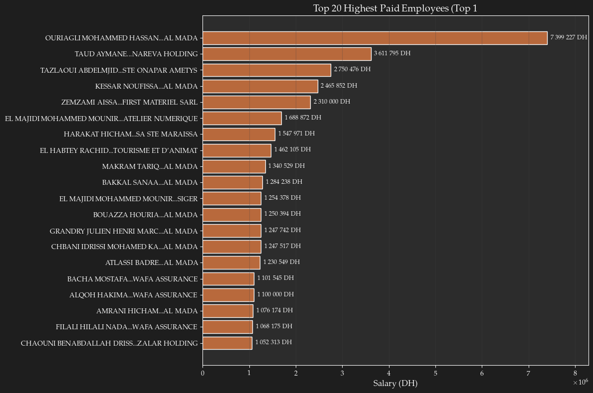
# Display the head of top 2% employees sorted by salary descending
df_top1_sorted = df_top1.sort_values('Salary', ascending=False)
df_top1_sorted.head(10)| N° d'immatriculation | Nom et prénom | Salaire déclaré (en DHs) | Raison Sociale | Activité | Ville | Fichier PDF | Salary | Last_name | Gender | Salary_bracket | Decile | |
|---|---|---|---|---|---|---|---|---|---|---|---|---|
| 107484 | 102079368 | OURIAGLI MOHAMMED HASSAN | 7 399 227,20 | AL MADA | GESTIONS DE VALEURS IMMOBILIERES | CASABLANCA | 10812.pdf | 7399227.20 | HASSAN | male | >25000 | 10 |
| 1227316 | 100708852 | TAUD AYMANE | 3 611 795,12 | NAREVA HOLDING | GESTION DE VALEURS MOBILIERES | CASABLANCA | 5958.pdf | 3611795.12 | AYMANE | male | >25000 | 10 |
| 591445 | 166571756 | TAZLAOUI ABDELMJID | 2 750 475,83 | STE ONAPAR AMETYS | GESTION DE VALEURS MOBILIERES | CASABLANCA | 1609.pdf | 2750475.83 | ABDELMJID | male | >25000 | 10 |
| 107517 | 147676236 | KESSAR NOUFISSA | 2 465 852,50 | AL MADA | GESTIONS DE VALEURS IMMOBILIERES | CASABLANCA | 10812.pdf | 2465852.50 | NOUFISSA | female | >25000 | 10 |
| 942616 | 184114257 | ZEMZAMI AISSA | 2 310 000,00 | FIRST MATERIEL SARL | COMMERCIALISATION DU MATERIEL DES TRAVAU | MOHAMMEDIA | 44585.pdf | 2310000.00 | AISSA | male | >25000 | 10 |
| 754249 | 190424038 | EL MAJIDI MOHAMMED MOUNIR | 1 688 872,50 | ATELIER NUMERIQUE | IMPRIMEUR | CASABLANCA | 2827.pdf | 1688872.50 | MOUNIR | male | >25000 | 10 |
| 1170088 | 151498478 | HARAKAT HICHAM | 1 547 971,37 | SA STE MARAISSA | AGR CULTEUR DE TOMATES | BIOUGRA | 57234.pdf | 1547971.37 | HICHAM | male | >25000 | 10 |
| 678201 | 129213634 | EL HABTEY RACHID | 1 462 105,20 | TOURISME ET D'ANIMATION (STE DE) | HOTEL TIKIDA BEACH | AGADIR | 22245.pdf | 1462105.20 | RACHID | male | >25000 | 10 |
| 107486 | 111621374 | MAKRAM TARIQ | 1 340 529,05 | AL MADA | GESTIONS DE VALEURS IMMOBILIERES | CASABLANCA | 10812.pdf | 1340529.05 | TARIQ | male | >25000 | 10 |
| 107500 | 129011377 | BAKKAL SANAA | 1 284 237,70 | AL MADA | GESTIONS DE VALEURS IMMOBILIERES | CASABLANCA | 10812.pdf | 1284237.70 | SANAA | female | >25000 | 10 |
2. Highest paying companies (by mean salary)
# Exclude companies with very few employees to avoid noise
min_employees = 5
company_salary_stats = df_clean.groupby('Raison Sociale').agg(
mean_salary=('Salary', 'mean'),
employee_count=('Salary', 'count')
).reset_index()
company_salary_stats = company_salary_stats[company_salary_stats['employee_count'] >= min_employees].sort_values('mean_salary', ascending=False)
top_companies_paying = company_salary_stats.head(20)
print("\n" + "="*80)
print("TOP 10 HIGHEST PAYING COMPANIES (min 5 employees)")
print("="*80)
for i, row in top_companies_paying.iterrows():
print(f"{row['Raison Sociale'][:50]:50s} | Mean: {row['mean_salary']:>10,.2f} DH | Employees: {row['employee_count']:>6,}")
# Plot top paying companies
fig, ax = plt.subplots(figsize=(12, 12))
bars = ax.barh(top_companies_paying['Raison Sociale'].str[:40], top_companies_paying['mean_salary'],
color=ACCENT_PRIMARY, edgecolor='white')
ax.invert_yaxis() # Highest at top - DO THIS BEFORE TEXT LABELS
# Add employee count labels inside bars
for i, (idx, row) in enumerate(top_companies_paying.iterrows()):
count = row['employee_count']
label = f"{count} Employee{'s' if count > 1 else ''}"
# Position near right edge, using right-alignment for consistency
ax.text(row['mean_salary'] * 0.95, i, label,
va='center', ha='right', fontsize=9, color='white', fontweight='bold')
ax.axvline(df_clean['Salary'].mean(), color=ACCENT_CONTRAST, linestyle='--', linewidth=2,
label=f'Overall mean ({df_clean["Salary"].mean():,.0f} DH)'.replace(',', ' '))
ax.set_xlabel('Mean Salary (DH)')
ax.set_ylabel('Company')
ax.set_title('Top 10 Highest Paying Companies (by mean salary)')
ax.legend()
ax.grid(alpha=0.3, axis='x')
plt.tight_layout()
plt.savefig('../images/top_paying_companies.png', dpi=300, bbox_inches='tight')
plt.show()
================================================================================
TOP 10 HIGHEST PAYING COMPANIES (min 5 employees)
================================================================================
SIGER | Mean: 362,848.67 DH | Employees: 6
AL MADA | Mean: 328,936.17 DH | Employees: 62
SOCIETE MOUMNI VOYAGE SARL | Mean: 304,166.67 DH | Employees: 6
ZALAR HOLDING | Mean: 238,692.04 DH | Employees: 21
STE ONAPAR AMETYS | Mean: 226,101.37 DH | Employees: 17
UPLINE MULTI INVESTMENTS | Mean: 224,802.11 DH | Employees: 5
MICROSOFT MAROC | Mean: 183,574.89 DH | Employees: 35
TEMENOS NORTH AFRICA LLC | Mean: 157,290.44 DH | Employees: 5
TAQA NORTH AFRICA | Mean: 150,941.36 DH | Employees: 12
NAREVA HOLDING | Mean: 108,365.16 DH | Employees: 67
BELLAKHDAR CO (GROUPE) | Mean: 102,791.15 DH | Employees: 13
PWC ADVISORY | Mean: 99,985.08 DH | Employees: 115
MAROCAINE DE PARTICIPATION (STE) | Mean: 98,965.59 DH | Employees: 8
SAMSUNG ELECTRONICS MAGHREB ARAB | Mean: 96,871.14 DH | Employees: 76
GLOBELINK TMB MOROCCO EX TRANSP MOUHSINE | Mean: 94,008.26 DH | Employees: 8
AKWA GROUP SA | Mean: 92,180.46 DH | Employees: 19
GROUPE MENARA HOLDING | Mean: 91,215.78 DH | Employees: 19
PHILIP MORRIS MAROC | Mean: 90,203.69 DH | Employees: 78
STE COCA COLA CORPORATION | Mean: 88,837.52 DH | Employees: 26
GE HEALTHCARE MOROCCO | Mean: 88,828.53 DH | Employees: 19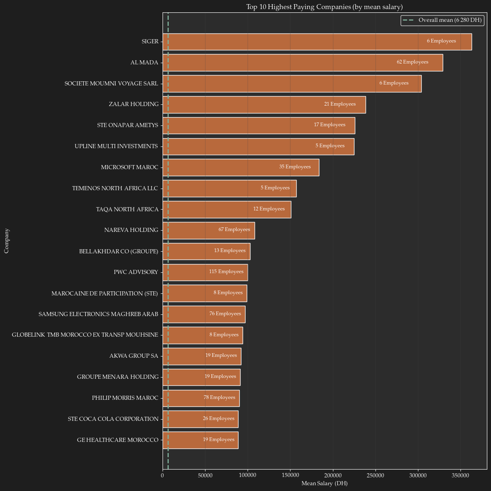
Specific company info
# Plot salary statistics for a single company
# company_name = "THE BOSTON CONSULTING GROUP"
company_name = "CAPGEMINI TECHNOLOGY SERVICES MAROC SA"
# Filter data for the company
company_df = df[df['Raison Sociale'] == company_name].copy()
# drop last row
company_df = company_df.iloc[:-1]
# Show last row
company_df.tail(5)| N° d'immatriculation | Nom et prénom | Salaire déclaré (en DHs) | Raison Sociale | Activité | Ville | Fichier PDF | Salary | Last_name | Gender | |
|---|---|---|---|---|---|---|---|---|---|---|
| 825094 | 199932777 | ANEBARI OMAIMA | 42 218,77 | CAPGEMINI TECHNOLOGY SERVICES MAROC SA | AIDER A LA GEST ET AU DEV DES ENTREPRIS | CASABLANCA | 33927.pdf | 42218.77 | OMAIMA | female |
| 825095 | 937488307 | BEN DAOUD ZAKARIA | 9 917,00 | CAPGEMINI TECHNOLOGY SERVICES MAROC SA | AIDER A LA GEST ET AU DEV DES ENTREPRIS | CASABLANCA | 33927.pdf | 9917.00 | ZAKARIA | male |
| 825096 | 939562701 | DKHISSI RIME | 2 964,92 | CAPGEMINI TECHNOLOGY SERVICES MAROC SA | AIDER A LA GEST ET AU DEV DES ENTREPRIS | CASABLANCA | 33927.pdf | 2964.92 | RIME | female |
| 825097 | 954958103 | AHSAINE KHADIJA | 9 695,78 | CAPGEMINI TECHNOLOGY SERVICES MAROC SA | AIDER A LA GEST ET AU DEV DES ENTREPRIS | CASABLANCA | 33927.pdf | 9695.78 | KHADIJA | female |
| 825098 | 967329509 | FARAH HASNA | 8 915,86 | CAPGEMINI TECHNOLOGY SERVICES MAROC SA | AIDER A LA GEST ET AU DEV DES ENTREPRIS | CASABLANCA | 33927.pdf | 8915.86 | HASNA | female |
if len(company_df) == 0:
print(f"No data found for company: {company_name}")
else:
# Create figure with subplots
fig, axes = plt.subplots(1, 3, figsize=(15, 4))
# 1. Salary distribution histogram
axes[0].hist(company_df['Salary'], bins=30, color=ACCENT_PRIMARY, edgecolor='black', alpha=0.7)
axes[0].set_xlabel('Salary (MAD)', fontsize=12)
axes[0].set_ylabel('Frequency', fontsize=12)
axes[0].set_title('Salary Distribution', fontsize=14, fontweight='bold')
axes[0].grid(alpha=0.3)
# 2. Box plot
axes[1].boxplot(company_df['Salary'], vert=True, patch_artist=True,
boxprops=dict(facecolor=ACCENT_PRIMARY, alpha=0.7),
medianprops=dict(color=ACCENT_CONTRAST, linewidth=2),
whiskerprops=dict(color=TEXT_PRIMARY),
capprops=dict(color=TEXT_PRIMARY))
axes[1].set_ylabel('Salary (MAD)', fontsize=12)
axes[1].set_title('Salary Box Plot', fontsize=14, fontweight='bold')
axes[1].grid(alpha=0.3, axis='y')
# 3. Summary statistics as text
axes[2].axis('off')
stats_text = f"""
Company: {company_name}
Employees: {len(company_df):,}
Mean: {company_df['Salary'].mean():,.0f} MAD
Median: {company_df['Salary'].median():,.0f} MAD
Std Dev: {company_df['Salary'].std():,.0f} MAD
Min: {company_df['Salary'].min():,.0f} MAD
Max: {company_df['Salary'].max():,.0f} MAD
Q1: {company_df['Salary'].quantile(0.25):,.0f} MAD
Q3: {company_df['Salary'].quantile(0.75):,.0f} MAD
"""
axes[2].text(0.1, 0.5, stats_text, fontsize=11, verticalalignment='center',
family='monospace', color=TEXT_PRIMARY)
plt.tight_layout()
plt.savefig("../images/companyinfo.png", dpi=300)
plt.show()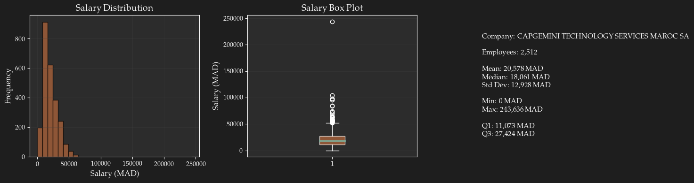